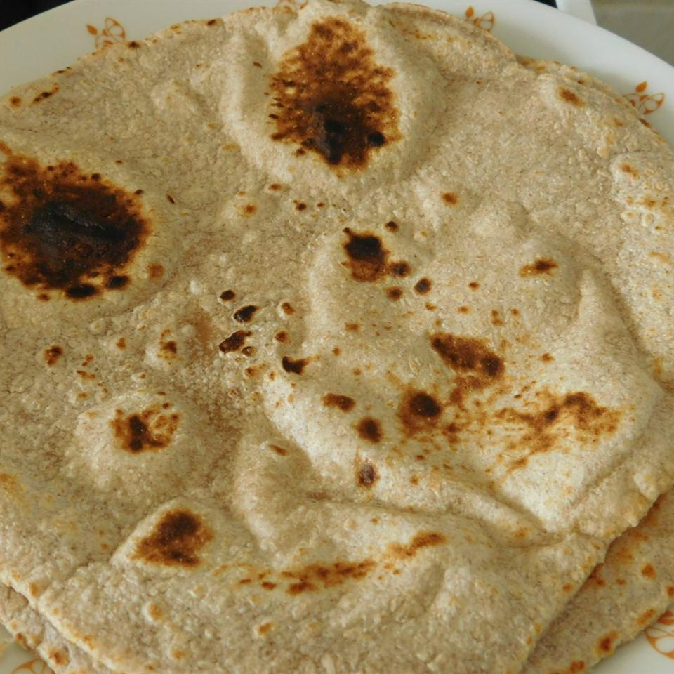

Indian Chapati Bread

Warm, soft flatbread great for serving with curries or wrapping sandwiches
Chapati is the quintessence of the Indian cuisine so much so that no meal is complete without this Indian flatbread. Prepared with the goodness of whole wheat flour, water, salt and ghee, this simple Indian bread goes well with everything. Right from gravies to dals to sweets, this delight is perfect dose of taste and health.
Ingredients
- 1 cup whole wheat flour
- 1 cup all-purpose flour
- 1 teaspoon salt
- ¾ cup hot water or as needed
- 2 tablespoons olive oil
Recipe Instructions
- Mix flours and salt in a large bowl. Use a wooden spoon to stir in water and olive oil. Mix until a soft, elastic dough forms and add more water, if needed. Knead dough on a lightly floured surface until smooth.
- Divide dough into 10 equal portions, or less if you want larger chapatis. Roll each piece into a ball and let rest for a few minutes.
- Heat a lightly greased skillet over medium heat.
- Use a rolling pin to roll dough balls out on a lightly floured surface until very thin, like a tortilla.
- When the skillet starts to smoke, place a chapati in it. Cook until bottom has brown spots, about 30 seconds, then flip and cook 30 seconds more. Repeat to cook remaining chapatis.
Return to top
Return to home page